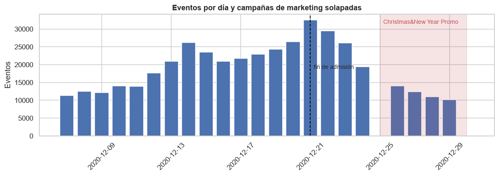
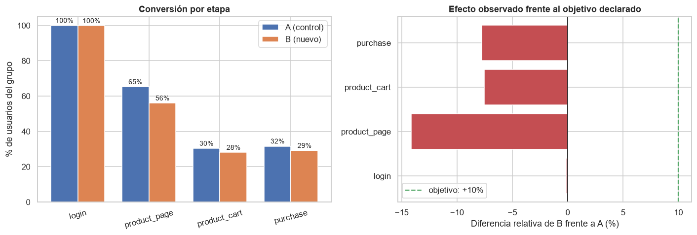
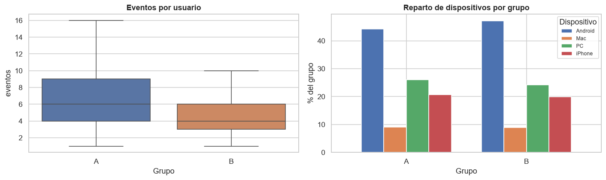

Test A/B — Sistema de Recomendaciones
Antes de interpretar los resultados de una prueba A/B hay que verificar que la prueba se ejecutó según su propia especificación. Aquí no se cumplió, y eso cambia por completo la conclusión.
Resumen ejecutivo
Se evaluó la prueba A/B recommender_system_test de un nuevo sistema de recomendaciones, cuyo objetivo declarado era mejorar en un 10% la conversión en cada etapa del embudo product_page → product_cart → purchase. Antes de comparar los grupos, se auditó si la prueba se había ejecutado conforme a su propia especificación — y no fue así. El análisis documenta cinco incumplimientos concretos y calcula la potencia estadística real de la prueba antes de emitir cualquier recomendación de negocio.
Contexto / Problema
Es habitual que un equipo de producto reciba los datos de una prueba A/B ya "cerrada" y pida directamente una lectura de resultados. El riesgo de saltarse la auditoría de diseño es interpretar como efecto del producto lo que en realidad es ruido de una prueba mal ejecutada, o peor, contaminada por factores externos como una campaña de marketing simultánea.
Datos
| Característica | Detalle |
|---|---|
| Fuente | Dataset del curso TripleTen — prueba A/B recommender_system_test |
| Archivos | final_ab_participants_upd_us.csv, final_ab_events_upd_us.csv, final_ab_new_users_upd_us.csv, ab_project_marketing_events_us.csv |
| Embudo evaluado | login → product_page → product_cart → purchase |
| Objetivo declarado | +10% de conversión por etapa para el grupo B (nuevo sistema) |
Herramientas y tecnologías
Estadística inferencial
Visualización
Datos y entorno
Metodología / Proceso
Auditoría de la especificación
Verificación de tamaño de grupos, muestra objetivo, región de participantes y ventana temporal declarados frente a los datos reales.
Detección de solapamiento
Cruce con el calendario de campañas de marketing para identificar confusores externos simultáneos a la prueba.
Construcción del embudo
Conversión de eventos crudos al embudo login → product_page → product_cart → purchase por grupo experimental.
Prueba de proporciones por etapa
Comparación estadística de la conversión de A vs. B en cada etapa del embudo.
Cálculo de potencia estadística
Estimación de la potencia real de la prueba dado el tamaño de muestra obtenido, frente al tamaño necesario para detectar el efecto declarado.
Recomendación
Síntesis de los hallazgos de diseño y de resultado en una recomendación accionable para el equipo de producto.
Mi rol y contribución
- Prioricé auditar el diseño de la prueba antes de comparar los grupos, en vez de asumir que los datos ya venían "listos para analizar".
- Detecté el solapamiento con la campaña de marketing navideña "Christmas & New Year Promo" en la misma región, un confusor externo no declarado en el enunciado.
- Identifiqué un problema de instrumentación: la mayoría de los compradores no tiene registrado el evento de carrito, lo que limita qué se puede concluir en esa etapa.
- Calculé la potencia estadística real de la prueba (~30% en
purchase) para dimensionar cuánta confianza merece la ausencia de diferencia observada, en vez de interpretar "no significativo" como "no hay efecto". - Formulé una recomendación de negocio con condiciones explícitas para repetir la prueba correctamente, no solo un veredicto binario de adoptar/descartar.
Resultados e insights
| Análisis | Hallazgo |
|---|---|
| Auditoría de diseño | Incumple 5 de 6 parámetros de su especificación: grupos ~3:1 en vez de 50/50, muestra insuficiente (3 675 vs. 6 000 previstos), participantes fuera de la región objetivo, solapamiento con otra prueba y campaña de marketing, período truncado |
| Conversión por etapa | El grupo B no supera al grupo A en ninguna etapa del embudo; la única diferencia significativa (en product_page) es desfavorable al nuevo sistema |
| Potencia estadística | ~30% en purchase (muy por debajo del 80% habitual); harían falta ~3 500 usuarios/grupo y hubo 655 |
| Recomendación | No adoptar ni descartar el nuevo sistema — repetir la prueba correctamente, con 7 condiciones explícitas de diseño |

Solapamiento entre la prueba A/B y la campaña de marketing "Christmas & New Year Promo"

Conversión por etapa: el grupo B queda por debajo del objetivo declarado en las tres etapas del embudo

Verificación de balance entre grupos: eventos por usuario y distribución de dispositivos
Conclusiones
La prueba, tal como se ejecutó, no permite responder la pregunta de negocio que la motivó: no cumple su propia especificación de diseño y, además, comparte ventana temporal con una campaña de marketing en la misma región. En las etapas donde hay señal, el nuevo sistema no mejora al actual; en las etapas donde no la hay, la potencia estadística es demasiado baja para concluir nada con confianza. La recomendación no es adoptar ni descartar el sistema, sino repetir la prueba con los grupos balanceados, la muestra completa, la región correcta y sin solapamiento con otras campañas.